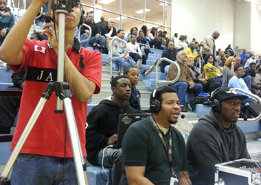
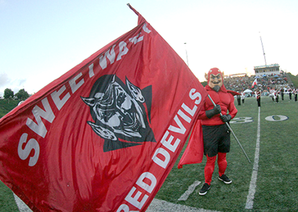
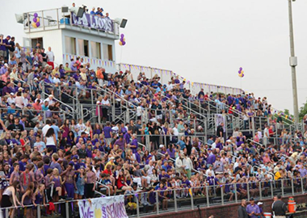
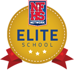
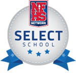

<html lang="en">

<head>

<meta charset="UTF-8" />

<link rel="shortcut icon" href="http://admin.stage.nfhsnetwork.com/favicon.ico" type="image/vnd.microsoft.icon">

<link rel="stylesheet" href="sbp_style.css" />

<link href="http://fonts.googleapis.com/css?family=Open+Sans:300,400" rel="stylesheet" type="text/css">

<link href="http://fonts.googleapis.com/css?family=Titillium+Web:400,700,300" rel="stylesheet" type="text/css">

<meta name="viewport" content="width=device-width, minimum-scale=1.0, maximum-scale=1.0">


<title>NFHS Network | School Broadcast Program</title>

</head>

<body>

<div id="header">

	<a id="main_logo" href="#"></a>

</div><!End header div>

<div id="hero">

</div><!end main hero div>

<div id="main_headline">

		<h1>SCHOOL BROADCAST PROGRAM</h1>
	
	
</div><!end main_headline>

<div id="about">

<div class="container">

	<h2>About the program</h2>
	
	<p id="about_body_copy">
	The NFHS Network School Broadcast Program (SBP) makes it easy for students to produce live video broadcasts by providing the software, tools and training they need for free. With our proprietary technology, schools can produce and distribute high quality events throughout the year including regular season sports, graduation, band, cheer events, as well as other school activities. Broadcasting these events on the NFHS Network is a great way for a school to showcase its students and activities while strengthening the connection with parents, players, boosters and the community. The platform allows both live streaming and archiving for on-demand viewing. Your fans will be able to watch your events whenever they want, wherever they are. Becoming part of the NFHS Network School Broadcast Program is free and you can get started with as little as a camera, a laptop, and an Internet connection.
	</p>
	
	
</div><!end container>
</div><!end about>


<div id="benefits">

	<div class="container">

		<h2>benefits</h2>
		
			<div class="benefit_col">
				
				<h3>education</h3>
				
				<div class="grey_col_boxes">
				 
						
					<p class="box_blurb">The NFHS Network School Broadcast Program provides a platform for students to learn about production and broadcast journalism. The program gives students an unprecedented opportunity to gain hands-on video production and on-camera experience. Participation in the program helps prepare students for college and professional careers in the journalism industry.</p>
			
				</div><!end grey boxes>
			
			</div><!end alignment columns .benefit_col>

			
			
			
			<div class="benefit_col">
				
				<h3>community</h3>
				
				<div class="grey_col_boxes">
			
						
					<p class="box_blurb">The NFHS Network School Broadcast Program provides schools with a platform to showcase excellence and to enhance their connection with the community. Participating schools have a dedicated school-branded channel that makes reaching alumni, friends, and family outside the local area easy.  Broadcasting school events 
is a unique way to increase school spirit throughout 
the community.</p>
	
				</div><!end box _center>
				
			</div><!end outside_box_center>

			
			
			<div class="benefit_col">
				
				<h3>fundraising</h3>
				
				<div class="grey_col_boxes">
					
						
					
					<p class="box_blurb">Live broadcasts of sporting events on the NFHS Network require viewers to purchase a pass to watch. The pass model enables schools to participate in the School Broadcast Program for free and provides an opportunity for the school to raise money. Schools receive 50% or more of the proceeds from school produced live events.</p>
					
				</div><!end box _right>
				
			</div><!end outside_box_right>
			
	</div><!end container>
	
</div><!end benefits>
	
<div class="clear_fix">
</div>


<div id="testimonials">

<div class="container">

	<h2>Testimonials</h2>
		
		<div id="testimonials_content">
	
		<div class="testimonials_sections">
			
	
	<div class="testimonials_blurb">
	
	<h4>Tucker High School<br>Located in Tucker, GA<br>Earnings in 2014: $2,569</h4>
	
	<p class="testimonials_body_copy" >“The students enjoy the hands-on learning experience in broadcast video and our community has become more involved with our school.”</p>
	
	<p class="testimonials_name" >– Robert Knox, Teacher and Coach.</p>
	
	</div><!end testimonials_blurb_1>		
		</div><!testimonials_sections_1>
		
		
		
			<div class="testimonials_sections">
			
	
	<div class="testimonials_blurb">
	
	<h4>Sweet Water High School<br>Located in Sweet Water, AL<br>Earnings last year:  $500</h4>
	
	<p class="testimonials_body_copy" >“The fans’ reactions were overwhelming. They loved it. They loved the fact that we were going to get [money] from [the School Broadcast Program] this year. They were very supportive.”</p>
	
	<p class="testimonials_name" >-  Patricia Jones<br>Sweet Water School Broadcast Program Manager</p>
	
	</div><!end testimonials_blurb_2>
		
		</div><!testimonials_sections_2>
		
		
		
					<div class="testimonials_sections">
			
	
	<div class="testimonials_blurb">
	
	<h4>Christ Presbyterian Academy<br>Located in Nashville, TN<br>Earnings last year:  $2,4220</h4>
	
	<p class="testimonials_body_copy" >“We’re reaching family members that cannot be in attendance, whether it’s the elderly, the handicapped, or simply family that doesn’t live here in Nashville.  What’s even more significant is that game attendance hasn’t really been affected.”</p>
	
	<p class="testimonials_name" >– Mike Ellson, Athletic Director at CPA</p>
	
	</div><!end testimonials_blurb_3>
		
		</div><!testimonials_sections_3>
				</div><!end testimonials_content>

</div><!end container>
</div><!end testimonials>

<div class="clear_fix">
</div>


<div id="recognition">

	<div class="container">


<h2>RECOGNITION PROGRAM</h2>

<div class="badges">
			 
</div><!end badges>

<p id="recognition_body_copy">
	The NFHS Network salutes the participating schools that have earned the honor of being recognized 
as Select and Elite Schools for the 2014-2015 school year.  Select Schools demonstrate excellent 
broadcasting skills, and Elite Schools not only have excellent broadcasting skills, but also excel in 
promoting their events and generating funds for their schools.  Please contact your Student Broadcast Program manager or email <a href="mailto:accounts@nfhsnetwork.com">Accounts@NFHSnetwork.com</a> to find out how your school can be recognized as an NFHS Network Select or Elite School.
	</p>

<a href="#" class="hr_bttn">View Honor Roll</a>

</div><!end container>
</div><!end recognition>

<div class="clear_fix">
</div>

<div id="contact">

<div class="container">

	<h2>CONTACT US</h2>
	<p id="about_body_copy">
	If your school is interested in joining the NFHS Network Student Broadcast Program, please send us an email to <a href="mailto:sbp@nfhsnetwork.com">SBP@NFHSnetwork.com</a>. We look forward to hearing from you and discussing how to implement the program at your school.</p>
	
	<a href="#" class="hr_bttn">Contact Us Now</a>

	
	</div><!end container>
</div><!end contact>


</body>

</html>

